智能体设计 III：智能体记忆与可靠性
智能体的记忆层次与持久化；智能体在哪里失败、如何提升可靠性。
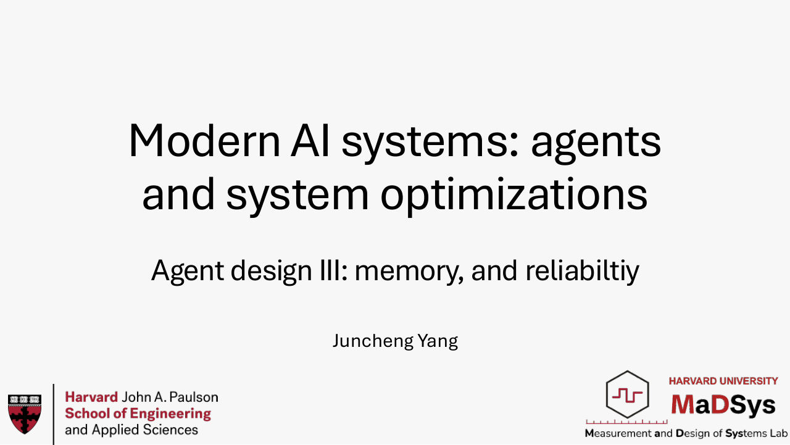
现代 AI 系统：智能体与系统优化
Juncheng Yang
智能体设计 III：记忆与可靠性
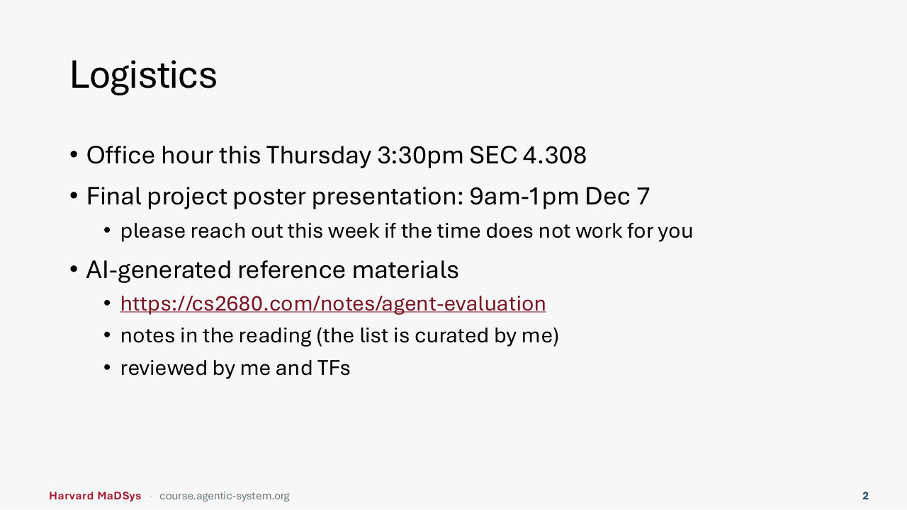
事务安排
- 本周四答疑：3:30pm，SEC 4.308
- 期末项目海报展示：12 月 7 日 9am–1pm
- 如果时间不合适，请本周内联系我们
- AI 生成的参考资料
- https://cs2680.com/notes/agent-evaluation
- 阅读列表中的笔记（列表由我精选）
- 经过我和助教的审阅
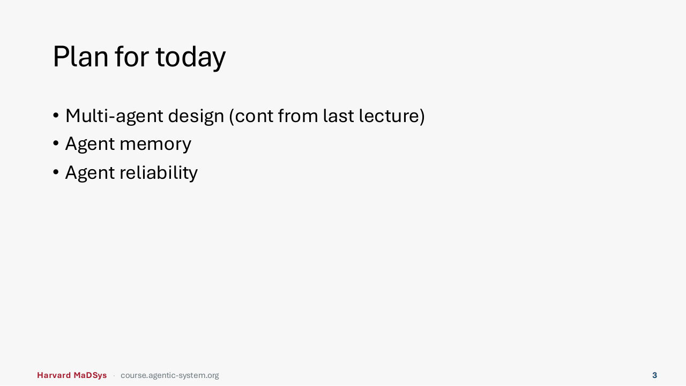
今天的安排
- 多智能体设计（接上节课）
- 智能体记忆
- 智能体可靠性

（图片页）
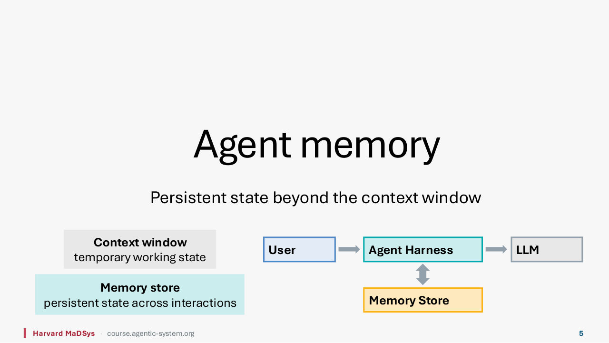
智能体记忆
超越上下文窗口的持久状态
（图：用户 → 智能体 Harness ↔ LLM；Harness ↔ 记忆存储）
- 上下文窗口：临时的工作状态
- 记忆存储：跨交互的持久状态
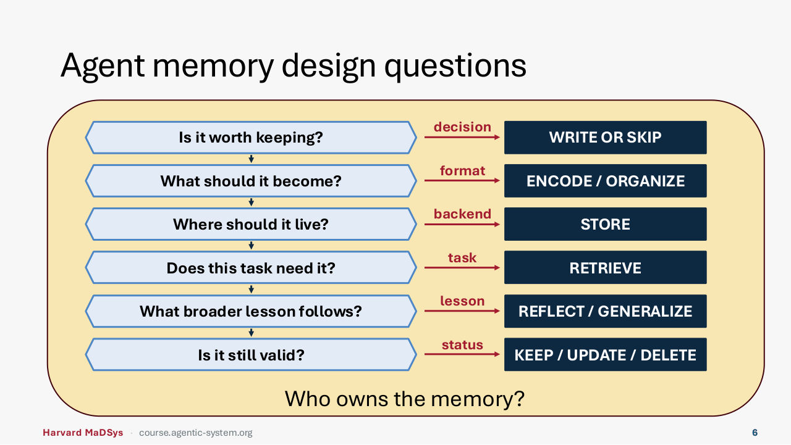
智能体记忆的设计问题
- 值得保留吗？ 写入还是跳过——决策
- 该变成什么形式？ 编码 / 组织——格式
- 该存在哪里？ 存储——后端
- 这个任务需要它吗？ 检索——任务
- 能总结出什么更普遍的经验？ 反思 / 泛化——经验
- 它还有效吗？ 保留 / 更新 / 删除——状态
- 以及：记忆归谁所有？
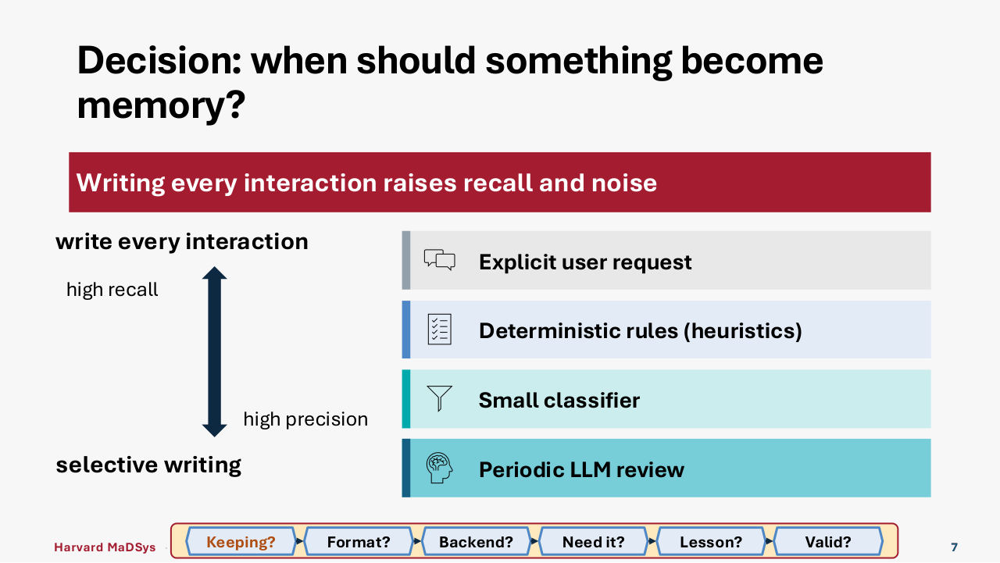
决策：什么时候该把东西变成记忆？
把每次交互都写下来，召回率和噪声会同时上升。
从“高召回”到“高精度”的光谱：
- 写入每一次交互
- 显式的用户请求
- 确定性规则（启发式）
- 小型分类器
- 定期的 LLM 审查
- 选择性写入
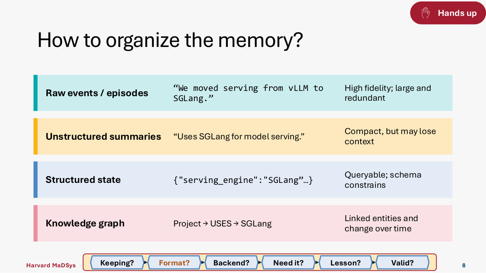
如何组织记忆？
- 原始事件 / 情节：“我们把推理服务从 vLLM 迁移到了 SGLang。”——保真度高；体积大、冗余
- 非结构化摘要：“使用 SGLang 提供模型推理服务。”——紧凑，但可能丢失上下文
- 结构化状态：
{"serving_engine":"SGLang"…}——可查询；受 schema 约束 - 知识图谱：项目 → USES → SGLang——实体互相关联，并能体现随时间的变化
举手
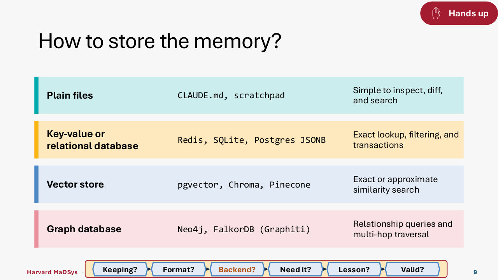
如何存储记忆？
- 纯文件（CLAUDE.md、草稿板）：易于查看、diff 和搜索
- 键值或关系型数据库（Redis、SQLite、Postgres JSONB）：精确查找、过滤和事务
- 向量库（pgvector、Chroma、Pinecone）：精确或近似的相似度搜索
- 图数据库（Neo4j、FalkorDB（Graphiti））：关系查询和多跳遍历
举手
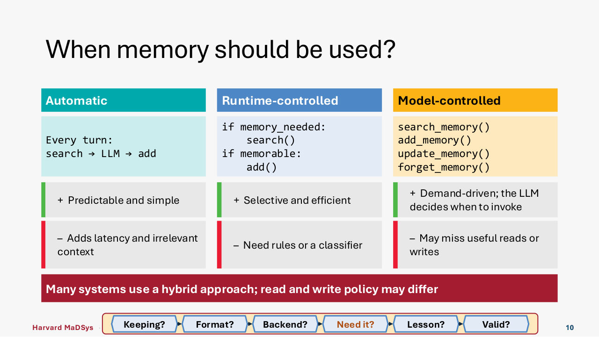
什么时候该使用记忆？
- 自动：每一轮都“搜索 → LLM → 写入”。＋可预测、简单；－增加延迟和无关上下文
- 由运行时控制：
if memory_needed: search()；if memorable: add()。＋有选择、高效；－需要规则或分类器 - 由模型控制：
search_memory()、add_memory()、update_memory()、forget_memory()。＋按需驱动，由 LLM 决定何时调用；－可能漏掉有用的读写
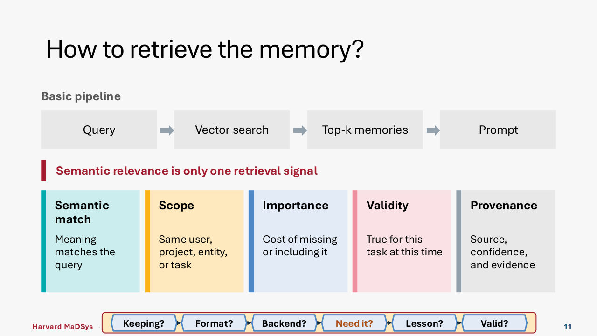
如何检索记忆？
语义相关性只是检索信号之一。
基础流程：查询 → 向量搜索 → top-k 条记忆 → 提示词
其他信号
- 语义匹配：含义与查询相符
- 范围：同一个用户、项目、实体或任务
- 重要性：漏掉或纳入它的代价
- 有效性：此时此刻对这个任务是否成立
- 来源：出处、置信度和证据
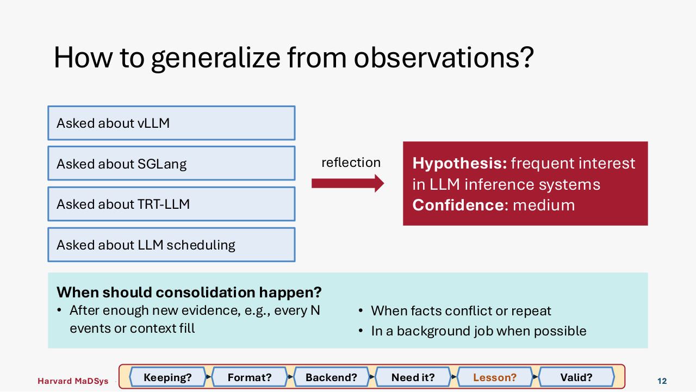
如何从观察中归纳？
- 问过 vLLM / 问过 SGLang / 问过 TRT-LLM / 问过 LLM 调度
- → 反思 → 假设：经常关注 LLM 推理系统；置信度：中
什么时候做整合（consolidation）？
- 积累了足够的新证据之后，例如每 N 个事件或上下文填满时
- 事实冲突或重复出现时
- 尽可能放在后台任务中进行
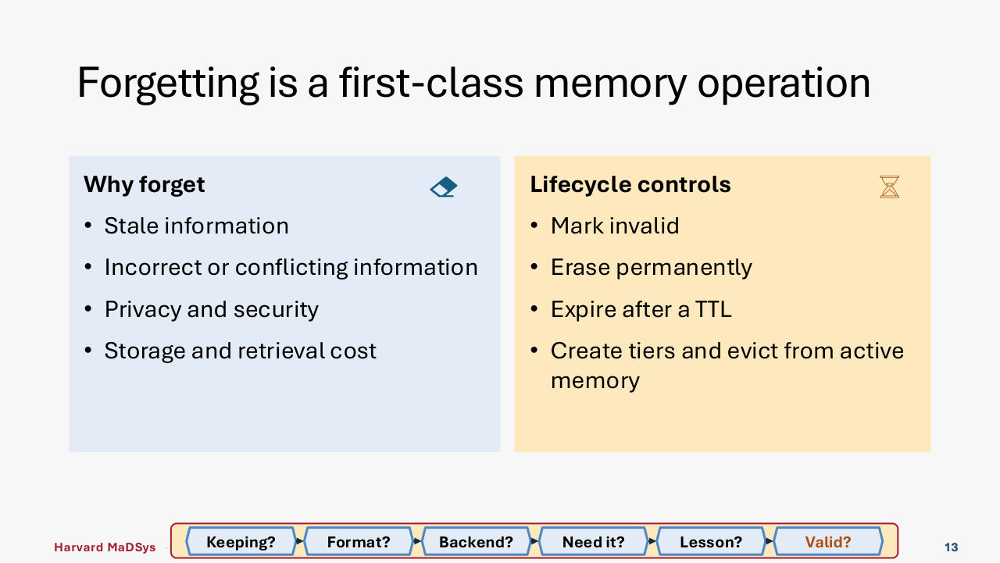
遗忘是一等的记忆操作
为什么要遗忘
- 信息过时
- 信息错误或相互冲突
- 隐私与安全
- 存储和检索成本
生命周期控制
- 标记为无效
- 永久擦除
- 按 TTL 过期
- 分层，并从活跃记忆中逐出
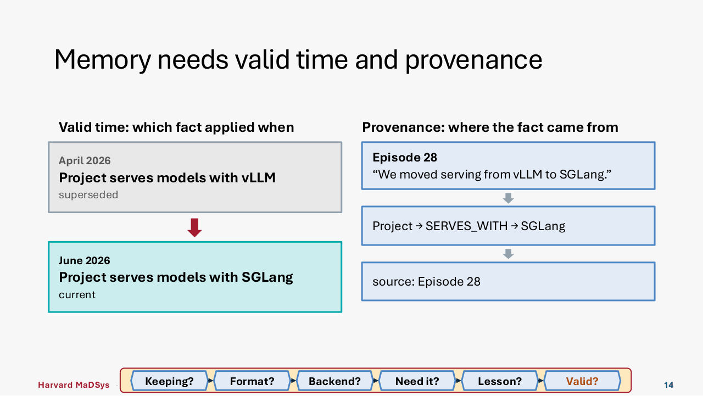
记忆需要有效时间和来源
- 2026 年 4 月：项目用 vLLM 提供模型服务（已被取代）
- 2026 年 6 月：项目用 SGLang 提供模型服务（当前）
- 有效时间：哪个事实在什么时候适用
- 来源：这个事实从哪里来——情节 28：“我们把推理服务从 vLLM 迁移到了 SGLang。”→ 项目 → SERVES_WITH → SGLang（来源：情节 28）
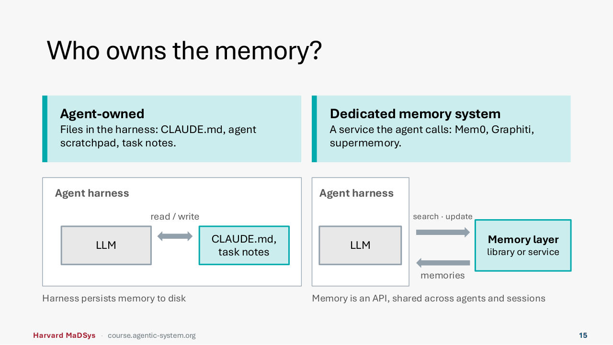
记忆归谁所有？
- 智能体自有：Harness 中的文件——CLAUDE.md、智能体草稿板、任务笔记。Harness 把记忆持久化到磁盘
- 专门的记忆系统：智能体调用的服务——Mem0、Graphiti、supermemory。记忆是一个 API，在多个智能体和会话之间共享
（图：左——Harness ↔ LLM，读写 CLAUDE.md 与任务笔记；右——Harness ↔ LLM，通过“搜索 · 更新”访问记忆层（库或服务））
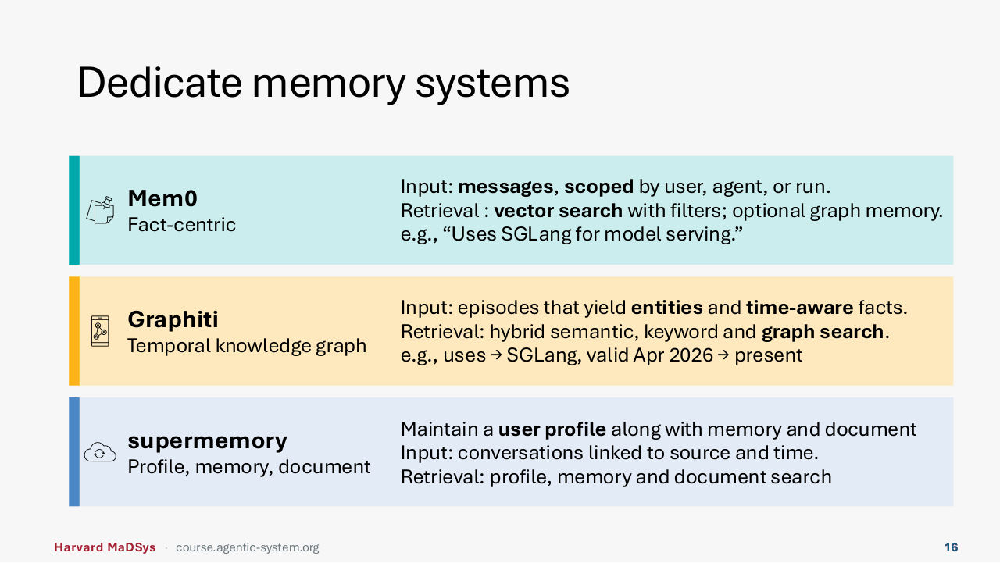
专门的记忆系统
Mem0——以事实为中心
- 输入：消息，按用户、智能体或运行限定范围
- 检索：带过滤的向量搜索；可选图记忆
- 例：“使用 SGLang 提供模型推理服务。”
Graphiti——时序知识图谱
- 输入：情节，从中抽取实体和带时间的事实
- 检索：语义、关键词与图搜索的混合
- 例：uses → SGLang，有效期 2026 年 4 月 → 至今
supermemory——画像、记忆、文档
- 在记忆和文档之外维护一份用户画像
- 输入：与来源和时间关联的对话
- 检索：画像、记忆和文档搜索
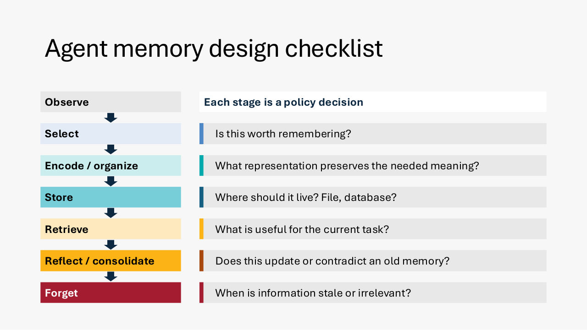
智能体记忆设计清单
- 观察 / 选择：这值得记住吗？
- 编码 / 组织：什么表示形式能保留所需的含义？
- 存储：放在哪里？文件、数据库？
- 检索：什么对当前任务有用？
- 反思 / 整合：这会更新或与旧记忆冲突吗？
- 遗忘：信息什么时候过时或无关？
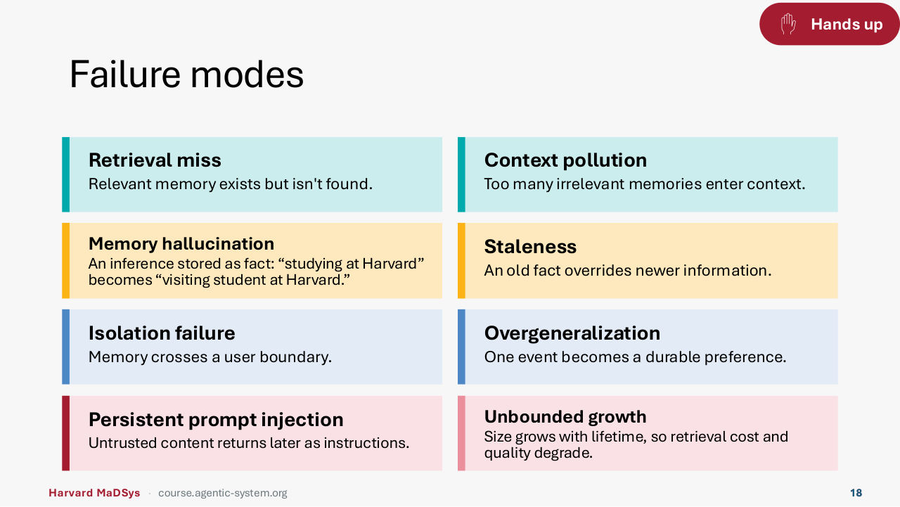
失败模式
- 检索遗漏：相关记忆存在，但没找到
- 上下文污染：太多无关记忆进入上下文
- 记忆幻觉：把推断当作事实存下来——“在哈佛读书”变成了“在哈佛做访问学生”
- 过时：旧事实压过了新信息
- 隔离失败：记忆越过了用户边界
- 过度泛化：一次事件变成了持久偏好
- 持久化的提示词注入：不可信内容之后以“指令”的形式返回
- 无界增长：体积随生命周期增长，检索成本和质量随之下降
举手
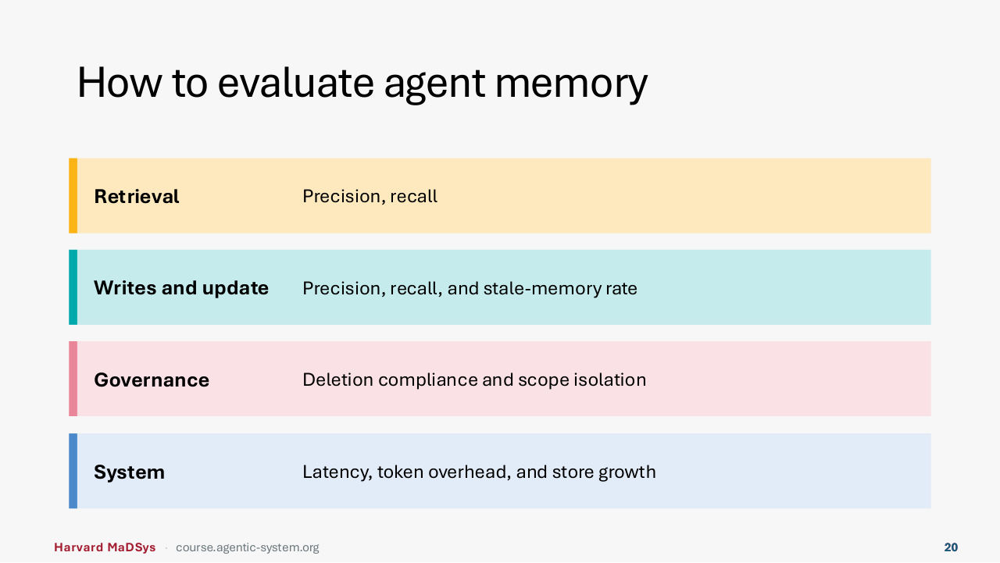
如何评测智能体记忆
- 写入与更新：精确率、召回率、过时记忆比例
- 检索：精确率、召回率
- 系统：延迟、token 开销、存储增长
- 治理：删除合规性、范围隔离
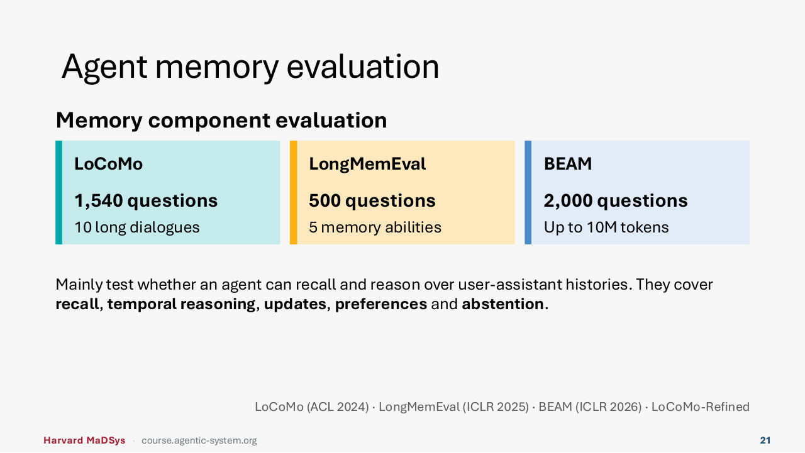
智能体记忆评测基准
- LoCoMo：1,540 个问题，10 段长对话
- LongMemEval：500 个问题，5 种记忆能力
- BEAM：2,000 个问题，最长 1000 万 token
记忆组件评测：LoCoMo（ACL 2024）· LongMemEval（ICLR 2025）· BEAM（ICLR 2026）· LoCoMo-Refined
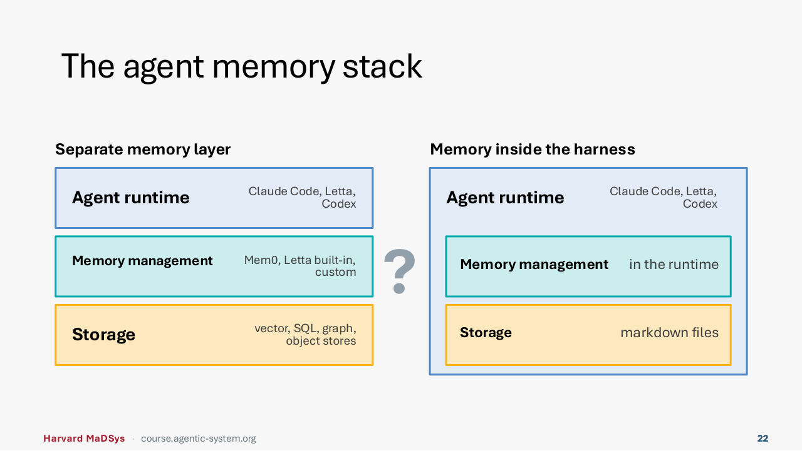
智能体记忆技术栈
独立的记忆层
- 智能体运行时：Claude Code、Letta、Codex
- 记忆管理：Mem0、Letta 内置、自研
- 存储：向量、SQL、图、对象存储
记忆在 Harness 内部
- 智能体运行时：Claude Code、Letta、Codex
- 记忆管理：在运行时内部
- 存储：Markdown 文件
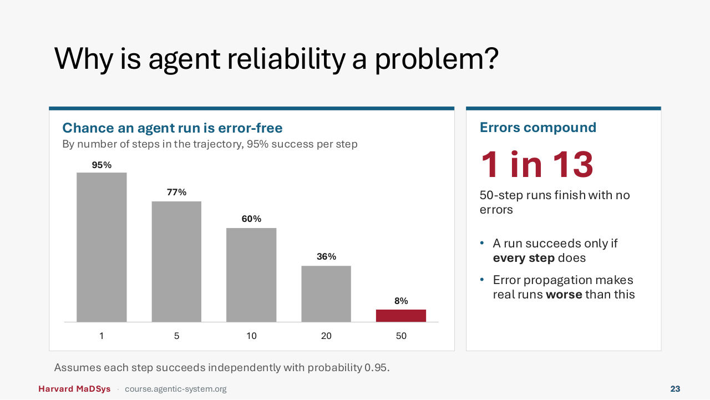
为什么智能体可靠性是个问题？错误会累积
假设每一步以 0.95 的概率独立成功，智能体一次运行完全无错的概率随轨迹步数变化：
- 1 步：95%；5 步：77%；10 步：60%；20 步：36%；50 步：8%
- 50 步的运行，只有约 1/13 能零错误完成
- 只有每一步都成功，整次运行才成功
- 错误传播会让真实运行比这更糟
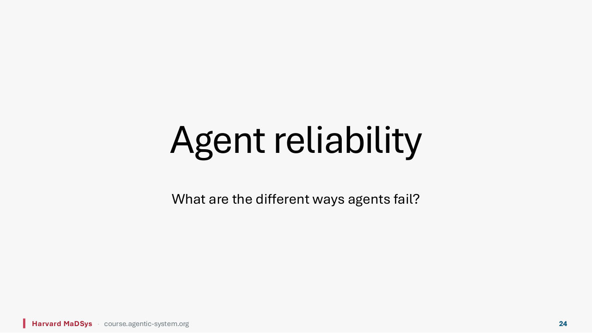
智能体可靠性
智能体有哪些不同的失败方式？
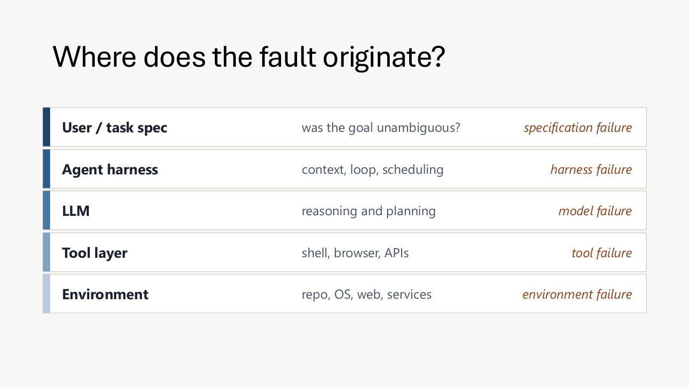
故障源自哪里？
- 用户 / 任务说明：目标是否明确？→ 说明失败
- 智能体 Harness：上下文、循环、调度 → Harness 失败
- LLM：推理与规划 → 模型失败
- 工具层：shell、浏览器、API → 工具失败
- 环境：仓库、操作系统、网页、服务 → 环境失败
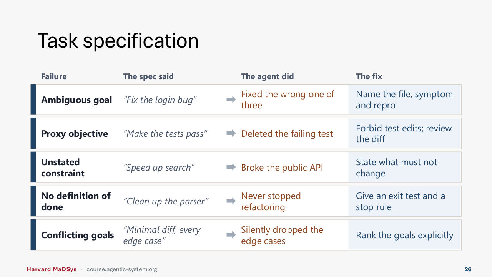
任务说明
| 失败 | 说明里写的 | 智能体做的 | 修复 |
|---|---|---|---|
| 目标含糊 | “修复登录 bug” | 修了三个里错的那个 | 写明文件、症状和复现方法 |
| 代理目标 | “让测试通过” | 把失败的测试删了 | 禁止改测试；审查 diff |
| 未说明的约束 | “加快搜索” | 破坏了公共 API | 写明哪些东西不能改 |
| 没有完成的定义 | “清理一下解析器” | 无休止地重构 | 给出退出测试和停止规则 |
| 目标冲突 | “diff 最小，且覆盖所有边界情况” | 悄悄丢掉了边界情况 | 显式给目标排优先级 |
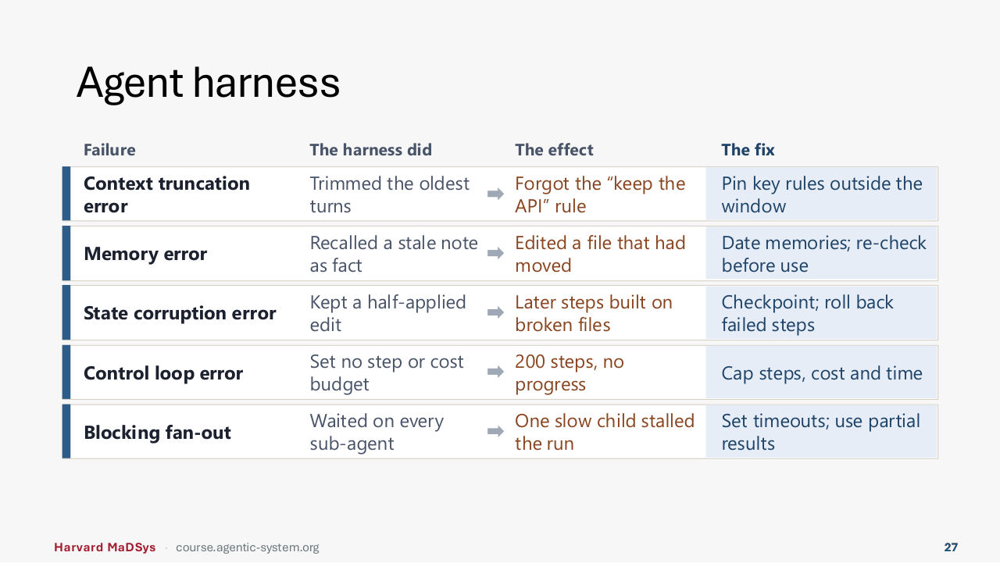
智能体 Harness
| 失败 | Harness 做了什么 | 后果 | 修复 |
|---|---|---|---|
| 上下文截断错误 | 剪掉了最早的轮次 | 忘了“保持 API 不变”的规则 | 把关键规则钉在窗口之外 |
| 记忆错误 | 把过时笔记当作事实召回 | 编辑了一个已被移走的文件 | 给记忆标日期；使用前复核 |
| 状态损坏错误 | 保留了一个只应用了一半的编辑 | 后续步骤建立在损坏的文件上 | 打检查点；回滚失败的步骤 |
| 控制循环错误 | 没有设定步数或成本预算 | 200 步毫无进展 | 限制步数、成本和时间 |
| 阻塞式扇出 | 等待每一个子智能体 | 一个慢的子任务拖住整次运行 | 设超时；使用部分结果 |
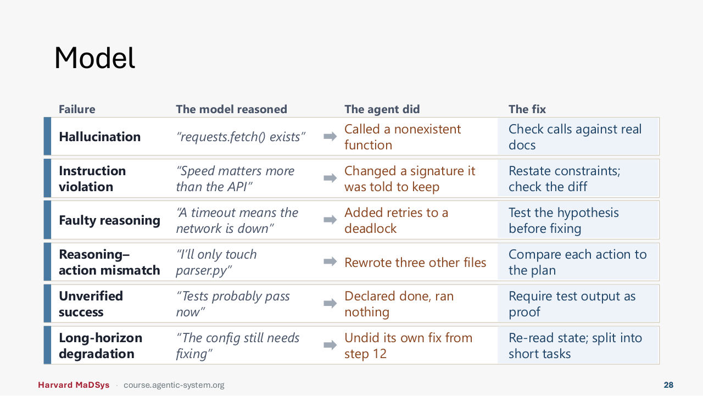
模型
| 失败 | 模型的推理 | 智能体做的 | 修复 |
|---|---|---|---|
| 幻觉 | “requests.fetch() 存在” | 调用了不存在的函数 | 对照真实文档检查调用 |
| 违反指令 | “速度比 API 更重要” | 改了被要求保留的函数签名 | 重申约束；检查 diff |
| 推理错误 | “超时意味着网络断了” | 给一个死锁加了重试 | 修复前先验证假设 |
| 推理与行动不一致 | “我只改 parser.py” | 重写了另外三个文件 | 把每个动作与计划对比 |
| 未验证的成功 | “测试现在大概能过了” | 什么都没跑就宣布完成 | 要求以测试输出作为证明 |
| 长程退化 | “配置还需要修” | 撤销了自己在第 12 步做的修复 | 重读状态；拆成短任务 |
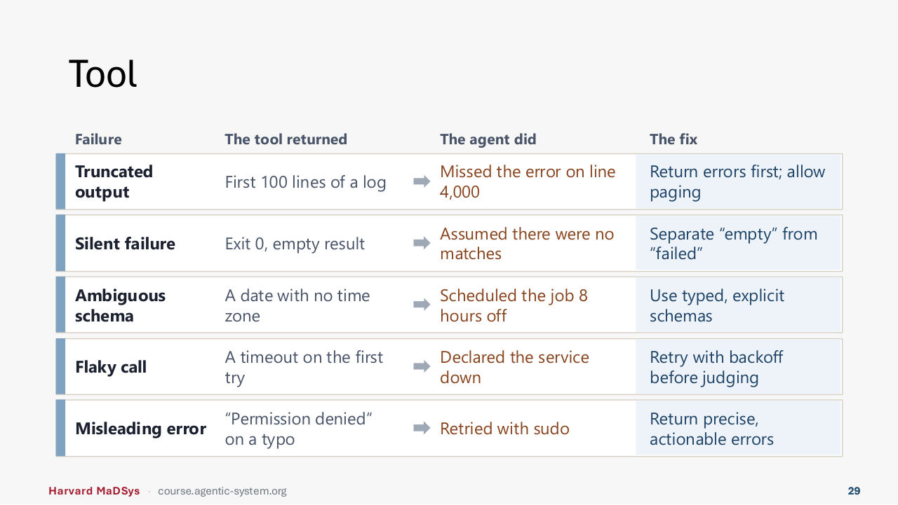
工具
| 失败 | 工具返回了 | 智能体做的 | 修复 |
|---|---|---|---|
| 输出被截断 | 日志的前 100 行 | 错过了第 4,000 行的错误 | 错误优先返回；支持分页 |
| 静默失败 | 退出码 0，结果为空 | 以为没有匹配项 | 区分“为空”与“失败” |
| schema 含糊 | 一个没有时区的日期 | 任务排期偏了 8 小时 | 使用类型化、显式的 schema |
| 不稳定的调用 | 第一次尝试超时 | 宣布服务宕机 | 带退避重试后再下结论 |
| 误导性错误 | 拼写错误却报“权限被拒绝” | 用 sudo 重试 | 返回精确、可操作的错误 |
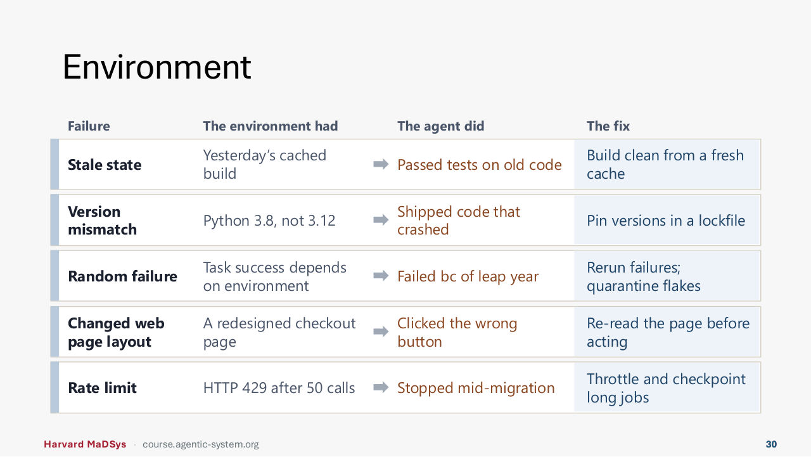
环境
| 失败 | 环境中存在 | 智能体做的 | 修复 |
|---|---|---|---|
| 过时状态 | 昨天缓存的构建 | 在旧代码上通过了测试 | 从干净缓存重新构建 |
| 版本不匹配 | Python 3.8 而不是 3.12 | 交付了会崩溃的代码 | 在 lockfile 中锁定版本 |
| 随机失败 | 任务成败取决于环境 | 因为闰年而失败 | 重跑失败项；隔离不稳定用例 |
| 网页布局变化 | 结账页面改版了 | 点错了按钮 | 行动前重新读取页面 |
| 限流 | 50 次调用后返回 HTTP 429 | 迁移做到一半停了 | 限速，并为长任务打检查点 |
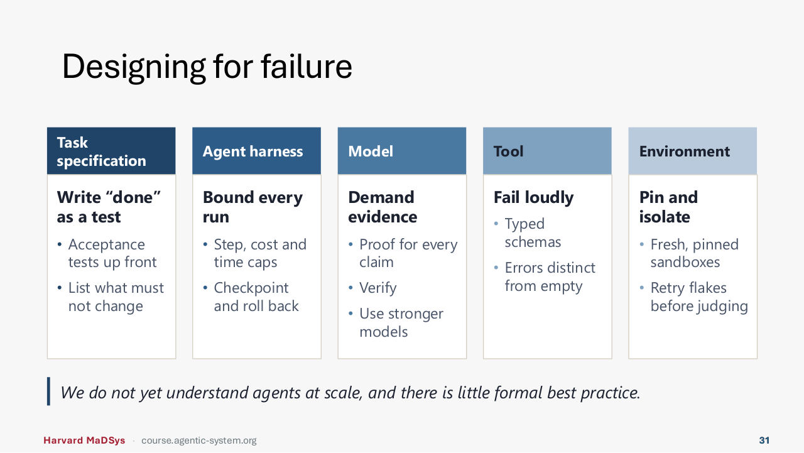
为失败而设计
- 任务说明——把“完成”写成测试：预先写好验收测试；列出不能改动的内容
- 智能体 Harness——给每次运行设边界：步数、成本和时间上限；检查点与回滚
- 模型——要求证据：每个结论都要有证据；验证；使用更强的模型
- 工具——大声失败：类型化 schema；错误与“为空”区分开
- 环境——锁定与隔离：全新、锁定版本的沙箱；先重试不稳定项再下结论
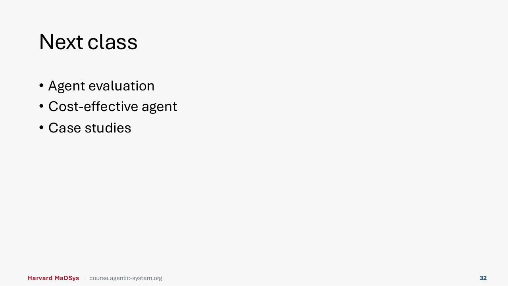
下节课
- 智能体评测
- 高性价比的智能体
- 案例研究